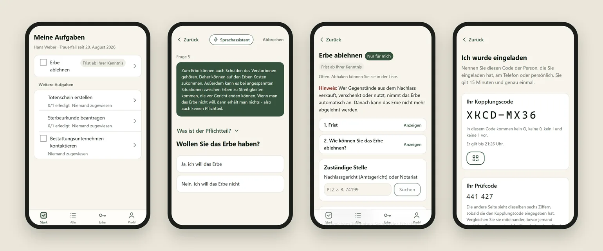

Working student @ VectorM.Sc. Informatics @ TUMMunich
Five-plus years building simulation and 3D tooling for automated driving at Vector, alongside my studies. I like fast, well-tested software, from Unity editors to post-quantum end-to-end encryption.
Working student software engineer since March 2021, across two products for automotive simulation and testing.
Nov 2024 — now
Unity
C#
VSceneCreator 3D OpenDRIVE road editor
Up to 70% faster edit-mode switching by restructuring the base model to lazy-load non-essential and non-visible objects.
Architected a read-only Explore Mode (hierarchy tree, dynamic tooltips) that became a preview tool for licensed users.
Shipped alphas 0.1 → 0.4 with Product Management, including 10% faster file loading through batched object creation.
Mar 2021 — Oct 2024
Java
Eclipse RCP
DYNA4 Simulation for virtual driving tests
5 major releases (5.0 → 9.0) of features, critical fixes and UI work, built with Product Management.
Designed a trace-signal alias system with its own file format, persistence layer, validation and quickfixes.
Expanded SWTBot/JUnit suites and linked Jenkins results to JIRA, cutting manual QA effort.
02 · Projects
Selected work
Side projects, a hackathon and research. The first three have technical deep dives.

Aug 2026 · Legal Loves Tech hackathon · Bavarian Ministry of Justice challenge
LoveNeverDies
End-to-end encrypted estate assistant for bereaved families, built in ten days with a team of lawyers. Hybrid post-quantum keys, and the server only ever stores ciphertext.